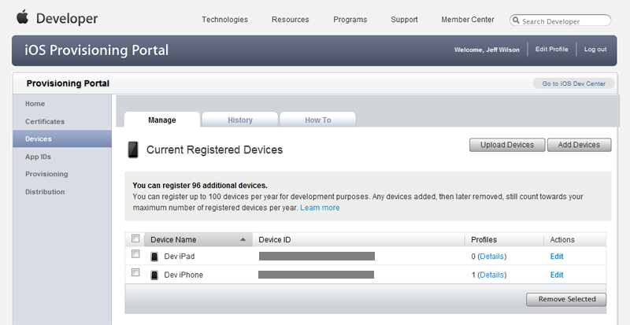

UDN
Search public documentation:
AppleiOSProvisioningPortal
日本語訳
中国翻译
한국어
Interested in the Unreal Engine?
Visit the Unreal Technology site.
Looking for jobs and company info?
Check out the Epic games site.
Questions about support via UDN?
Contact the UDN Staff
中国翻译
한국어
Interested in the Unreal Engine?
Visit the Unreal Technology site.
Looking for jobs and company info?
Check out the Epic games site.
Questions about support via UDN?
Contact the UDN Staff
Mobile Home > iOS Provisioning Overview > iOS Provisioning Portal Overview
iOS Provisioning Portal Overview
Overview
 Here, you can add multiple devices, set up explicit bundle identifiers, modify your provisioning profile, and much more. This section will detail some of the common actions that apply to developers creating iOS games with Unreal.
Here, you can add multiple devices, set up explicit bundle identifiers, modify your provisioning profile, and much more. This section will detail some of the common actions that apply to developers creating iOS games with Unreal.
Certificates
Development
Requesting a Development Certificate
In order to create a new development certificate, you need a certificate request file (.csr).-
To request a new developer certificate, click the button on the Development tab of the Certificates home page. This will take you to the create iOS Development Certificate page.

- Use the file input field to find your certificate request file (.csr). Then click the button to submit the request. You should now see the pending certificate request listed on the Development tab of the Certificates home page.
- Click the Certificates link to reload the Development tab of the Certificates home page. The certificate should now show as Issued.
Distribution
Requesting a Distribution Certificate
In order to create a new distribution certificate, you need a certificate request file (.csr).- To request a new distribution certificate, click the button on the Distribution tab of the Certificates home page. This will take you to the create iOS Distribution Certificate page.
- Use the file input field to find your certificate request file (.csr). Then click the button to submit the request. You should now see the pending certificate request listed on the Distribution tab of the Certificates home page.
-
Click the Certificates link to reload the Distribution tab of the Certificates home page. The certificate should now show as Issued.

Devices
Adding Devices
Adding additional devices enables you to assign more than one device to your provisioning profile. This makes it so you can test on multiple devices, e.g. on an iPad, iPhone, and iPod Touch, to make sure it performs on all desired platforms.- To add a new device, click the button on the Devices home page. This will take you to the Add Devices page.
-
On the Add Devices page, enter the following information:
- Device Name - This is just the display name that will be used to identify the particular device.
- Device ID - This is the unique id of your iOS device. There are instructions for locating the id through Xcode on a Mac, but another method is to use the iDevice Info app available in the App Store to find your Device ID. The app will even email the id to you so you can easily copy and paste it into the field.
- Click the button to add the new device. You should now see the new device listed on the Devices home page along with any previously added devices. 
App IDs
Creating App IDs
Manually creating App IDs enables you to set up the App ID with an explicit bundle identifier, which is necessary for using Game Center, In App Purchases, as well as for communicating with the Apple Push notification service.- To create a new App ID, click the button on the App IDs home page. This will take you to the Create App ID. If you have created any App IDs previously, they will be displayed on this page.
-
Enter the following information:
- Description - This is the display name that will be used to identify the App ID on the iOS Provisioning Portal.
- Bundle Seed ID - This is a unique identifier that is created automatically. You can have a new id generated by choosing Generate New.
- Bundle Identifier - This is a unique identifier for the new App ID. This can be a wildcard (&42;), but must be set to something explicit if you wish to take advantage of Game Center, In App Purchases, or the Apple Push Notification service. The recommended format for an explicit bundle identifier is a reverse-domain name style string. (Example:
com.EpicGames.UDNiOSGame)
- Click the button to create the new App ID. You should now see the new App ID listed in the App IDs home page.
Provisioning
Development
Creating Development Profiles
New development provisioning profiles can be created directly inside of the Provisioning section on the Development tab.-
To create a new development provisioning profile, click the button on the Development tab of the Provisioning home page. This will take you to the Create iOS Development Provisioning Profile page.

-
Fill in the profile's information:
- Profile Name - The display name used to identify the profile in the iOS Provisioning Portal
- Certificates - Check box next to the certificate to associate it with this profile.
- App ID - Choose from any of your existing App IDs to be associated with this profile.
- Devices - Check the box next to all of the devices that should be associated with this profile.
- Click the button to submit the new profile. This will take you back to the Development tab of the Provisioning home page where the new profile will be displayed as Pending.
- Reloading the Development tab of the Provisioning home page will cause the pending profile to become displayed as Active.
Modifying Development Profiles
An existing development provisioning profile can be edited in the Development tab of the Provisioning section. This allows you to rename the profile, choose which App ID is associated with the profile, select which devices are associated with the profile, or set the certificate associated with the profile.-
To modify an existing development profile, click the Edit link for that profile in the profile's list.
 Then, click the Modify link in the menu that appears.
This will take you to the Modify iOS Development Provisioning Profile page.
Then, click the Modify link in the menu that appears.
This will take you to the Modify iOS Development Provisioning Profile page.
-
Modify any of the profile's information:
- Profile Name - The display name used to identify the profile in the iOS Provisioning Portal
- Certificates - Check box next to the certificate to associate it with this profile.
- App ID - Choose from any of your existing App IDs to be associated with this profile.
- Devices - Check the box next to all of the devices that should be associated with this profile.
- Click the button to save the changes to the profile. This will take you back to the Development tab of the Provisioning home page where the modified profile will be displayed as pending.
- Reloading the Development tab of the Provisioning home page will cause the pending profile to become displayed as Active.
Distribution
Creating a Distribution Profile
New distribution provisioning profiles can be created directly inside of the Provisioning section on the Distribution tab.- To create a new distribution provisioning profile, click the button on the Distribution tab of the Provisioning home page. This will take you to the Create iOS Development Provisioning Profile page.
-
Fill in the profile's information:
- Distribution Method - Choose the desired distribution method. Choose App Store is you wish to distribute your app through the App Store. Choose Ad Hoc if you will be distributing the app yourself directly to devices, e.g. for businesses creating internal applications.
- Profile Name - The display name used to identify the profile in the iOS Provisioning Portal
- Distribution Certificates - This should list your distribution certificate. If you do not have one yet, see Distribution Certificate.
- App ID - Choose from any of your existing App IDs to be associated with this profile.
- Devices - Check the box next to all of the devices that should be associated with this profile. Note: Only enabled for Ad Hoc distribution.
- Click the button to submit the new profile. This will take you back to the Distribution tab of the Provisioning home page where the new profile will be displayed as Pending.
- Reloading the Distribution tab of the Provisioning home page will cause the pending profile to become displayed as Active.
Modifying Distribution Profiles
An existing distribution provisioning profile can be edited in the Distribution tab of the Provisioning section. This allows you to select the distribution method of the profile, rename the profile, choose which App ID is associated with the profile, or select which devices are associated with the profile.-
To modify an existing distribution profile, click the Edit link for that profile in the profile's list.
 Then, click the Modify link in the menu that appears.
This will take you to the Modify iOS Development Provisioning Profile page.
Then, click the Modify link in the menu that appears.
This will take you to the Modify iOS Development Provisioning Profile page.
-
Modify any of the profile's information:
- Distribution Method - Choose the desired distribution method. Choose App Store is you wish to distribute your app through the App Store. Choose Ad Hoc if you will be distributing the app yourself directly to devices, e.g. for businesses creating internal applications.
- Profile Name - The display name used to identify the profile in the iOS Provisioning Portal
- Distribution Certificates - This should list your distribution certificate. If you do not have one yet, see Distribution Certificate.
- App ID - Choose from any of your existing App IDs to be associated with this profile.
- Devices - Check the box next to all of the devices that should be associated with this profile. Note: Only enabled for Ad Hoc distribution.
- Click the button to save the changes to the profile. This will take you back to the Distribution tab of the Provisioning home page where the modified profile will be displayed as pending.
- Reloading the Distribution tab of the Provisioning home page will cause the pending profile to become displayed as Active.